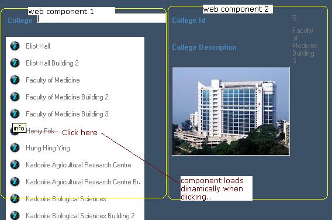

The current trend is to implement Intent-oriented interfaces, which can be approached by keeping track of the application context and taking actions accordingly. The best way to introduce this feature is to give an example: Suppose that you have a web page which loads two web components. One of them has a list of all the colleges (or faculties) in a university. Another component displays the college details (photo and description). The first component saves the collegeid in the context when a college is selected by the user. The other component tracks the context changes and therefore loads the corresponding information as soon as the collegeid is selected.  What Do We Call Context?When we say Context, we mean the context of our application in a form. When we access the CustomerId Textbox, our context is CustomerId; when we access the invoice lines grid, our context is the invoice line; and so on. When we move inside a screen, we're changing the context of attributes and variables. This information about context changes is essential when creating an intent-oriented interface. Our approach enables us to trigger events and take actions depending on the context information of the application (the place where the cursor is positioned). Suppose that the application consists of several web components which make up the web form. You can easily trigger an event in one of the web components as soon as the end user changes his/her context information in another component (changes the focus to a control, or selects a grid line). Basically, the web controls that you want to track changes in "subscribe" to an event which listens to the context changes of any other control. By programming a TrackContext event, the programmer retrieves the context information and takes the desired actions. That's all! Implementation DetailsNotifyContextChange Property For attributes and variables, it only applies to fields that are not read-only (it can be any control: edits, checkboxes, comboboxes, radio buttons). When the variable/attribute is focused, the context is saved with that information. Value changes in the variable/attribute are not detected, only the cursor's focus on it. The same happens for attributes/variables in freestyle grids. In the case of standard grids:
In the case of standard/freestyle grids:
You can change the information that is tracked by programming the SetContext event (explained below). For example, Notify Context Change Property in grid control: SetContext Event It applies to the same controls as the NotifyContextChange property: grids, freestylegrids, grid columns, attributes/variables. Syntax: Event <control>.SetContext(parameter) It can only be one SDT-type variable parameter. It means the context will be loaded in that parameter. TrackContext Event The parameters can only be variables. Notes:
Event TrackContext(param1, param2,..., paramN) Event TrackContext(param1, param2) Both events will be triggered as param1, param2, paramN notify their context. Examples and Use Cases1. When selecting an element from a grid (for example, "Colleges"), show the detailed information about the College next to it (this information may or may not be in the same web component of the "Colleges grid"). 2. When selecting a foreign key field, show a contextual prompt. 3. When selecting a field, show a textblock with Help information next to it. It's very easy! Suppose that you have three fields in the form: &courseid, &coursedescription, &courseprerequisites. You want to show a contextual help each time the focus is on one of these fields. Thus, you may code as follows: Event TrackContext(&courseId) textBlock1.Caption = 'Course Identification. Required field' EndEvent Event TrackContext(&coursedescription) textBlock2.Caption = 'Course Description. Required field' EndEvent Event TrackContext(&courseprerequisites) textBlock3.Caption = 'Course Prerequisites.' EndEvent Download Context-Sensitive User Interfases sample. 4. Load information without posts! Suppose you have two web components in your web form. One of them displays a grid with college degrees. The other web component displays a grid which loads all the courses of that degree program. You can load the second grid depending on the line selected in the first one, just by reading the context and without posting the entire web form! The "Careers" grid has the Notify Context Change property set to true. The code in the web component where the "Courses" grid displays is the following: Event TrackContext(&CareerId,&careerDescription) for each where CareerId = &CareerId &CourseId = CourseId &CourseDescription = CourseDescription &CoursePrerequisites = CoursePrerequisites coursegrid.Load() endfor EndEvent Notes: (1) In the future it will be possible to track all of the grid's information regardless of whether it is bound to an SDT Collection or not. FAQ
|
| Pages |
| NotifyContextChange property |